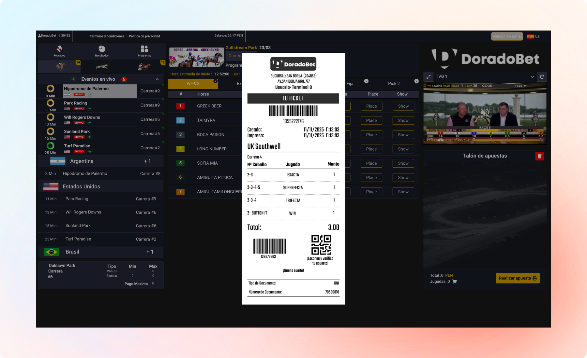

Find the race
Reach the event requested by the customer quickly.
DoradoBet is a work tool for registering horse racing bets from a terminal. The design connects race search, participant selection, and bet slip building while reducing steps during a frequently repeated operation.

Operators work while assisting a customer. They need to locate a race, register selections, review the bet slip, and complete the bet without constantly switching between views.
Speed matters, but accuracy matters just as much. A fast interaction that makes mistakes easier does not solve the operational problem.
The terminal needed to support a repetitive workflow where operators act quickly while verifying every selection before completing the transaction.
Reach the event requested by the customer quickly.
Keep participant, odds, and race information connected during a fast operation.
Verify what has been entered before processing a bet that may contain several selections.
The primary flow was designed to minimize screen changes between the customer's request and the completion of the bet.
Locate the event that needs to be processed.
Register the requested option directly from the event information.
Bring selections together and review them before completing the transaction.
The terminal also needs to support situations that appear during customer service, such as broadcasts or customer validation.
These functions should be available when needed without forcing operators to rebuild the bet afterward.
Access the event from the same environment where the bet is being processed.
Handle customer validation without turning it into a separate workflow.
Keep selections available until the transaction is completed.

The main decisions prioritize execution speed, recognition, and error prevention during repetitive tasks.
Information and actions are placed closer together to reduce unnecessary navigation.
Participants, odds, and statuses follow stable patterns to accelerate reading.
Selections remain available for review before processing.
Actions that move the transaction forward are separated from secondary controls.
Validation tasks appear when needed without permanently replacing the primary operation.
Enough information is displayed before confirmation to identify an incorrect selection.
The proposal supports a shorter path from race selection to the bet slip while keeping the information needed to verify every bet before processing.
DoradoBet is treated as a work tool where speed and accuracy carry equal importance.